Get to Know the Magic Behind
Smart City
Urbanify adalah website edukasi dalam meningkatkan cara pengelolaan kota dan lingkungan.
ABOUT US
Kata Urbanify sendiri diambil dari kata "Urban" dan akhiran "-ify", dimana Urban berarti perkotaan atau berkaitan dengan kota, dan "-ify" adalah akhiran yang berarti "membuat menjadi" atau "mengubah". Jadi, Urbanify berarti proses mengubah atau meningkatkan aspek perkotaan, menciptakan kota yang lebih baik dan lebih cerdas.
Mari Mengenal
Smart City
Smart City adalah konsep perkotaan yang menggunakan teknologi untuk meningkatkan kualitas hidup dan mengelola kota dengan lebih efisien. Dengan inovasi digital, Smart City berupaya mengatasi masalah seperti lalu lintas, polusi, dan sebagainya.

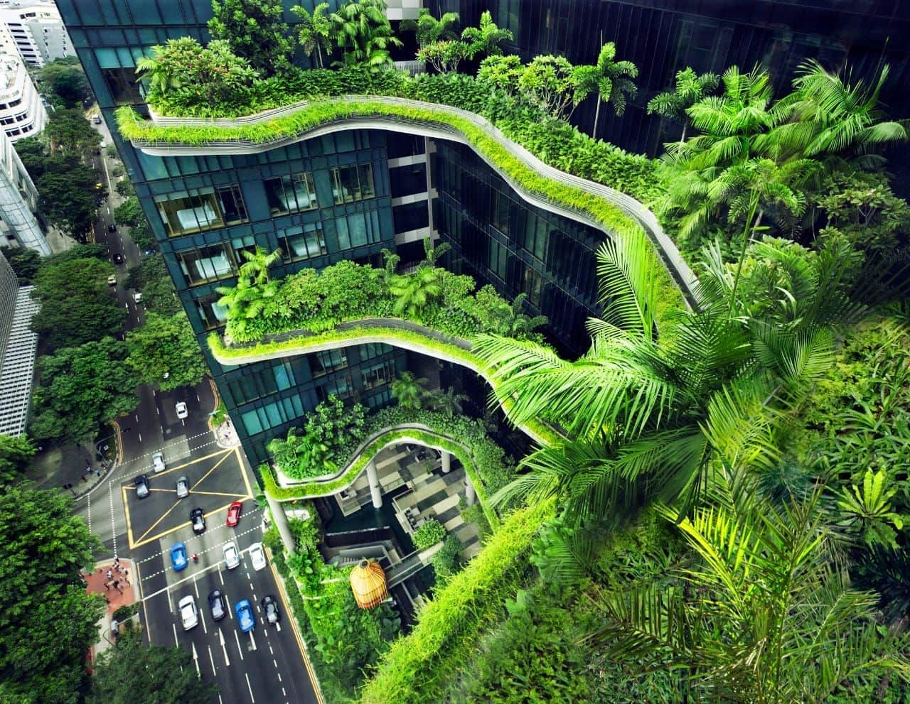
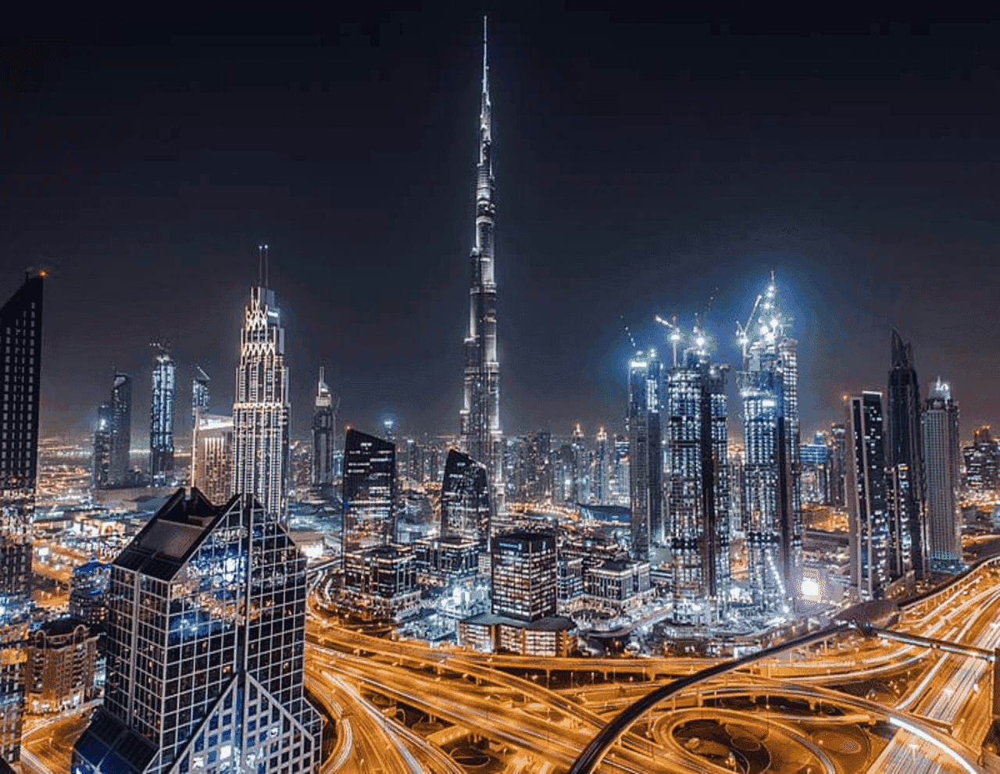

Sub-Edukasi yang Kami Akan Bahas
Urban
GreenSpace
Learn more
IoT
Application
Learn more
Citizen
Engagement
Learn more
MELALUI
Smart Environment
lingkungan yang dilengkapi dengan teknologi canggih dan sensor yang mengoptimalkan penggunaan sumber daya, dan meningkatkan kenyamanan serta efisiensi
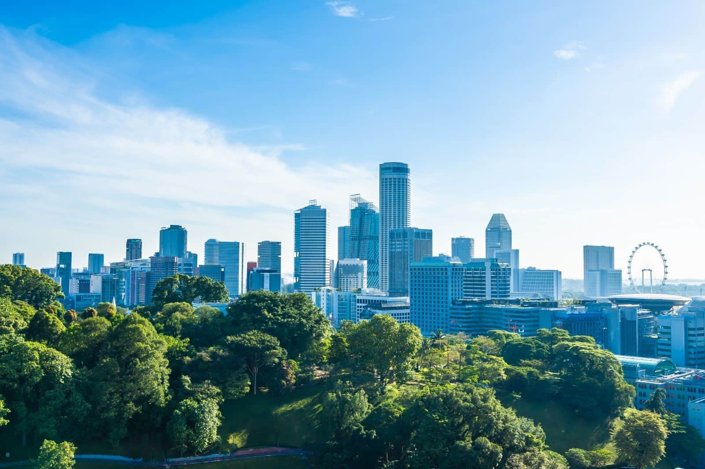
MEMANFAATKAN
Urban GreenSpace
Konsep yang mengacu pada area terbuka hijau di dalam kawasan perkotaan dengan tujuan memberikan akses ke alam dan lingkungan hijau bagi penduduk perkotaan
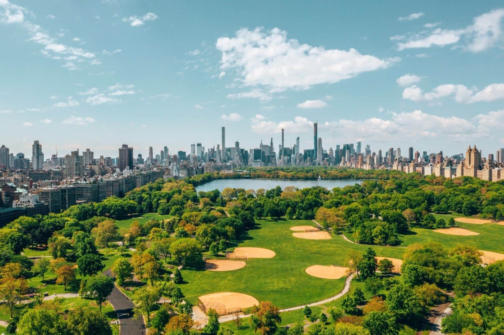
INTERNET OF THINGS
IoT Application
Integrasi internet dalam berbagai fasilitas agar kota menjadi lebih efisien dan ramah lingkungan
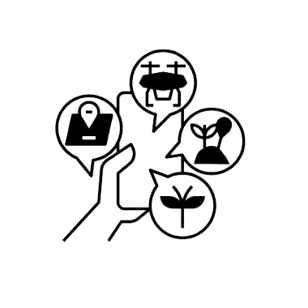
Green Roof Monitoring
Interactive Information
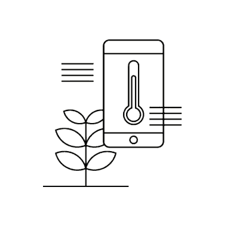
Predictive Maintenance
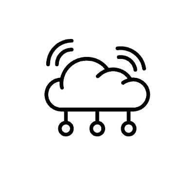
Connected Waste
DENGAN
Citizen Engagement
Konsep yang mendorong keterlibatan aktif warga dalam proses pengambilan keputusan publik, memastikan suara mereka didengar dan dipertimbangkan dalam membentuk kebijakan yang berdampak pada kehidupan mereka.
Citizen Engagement
Berita terkini mengenai Smart City
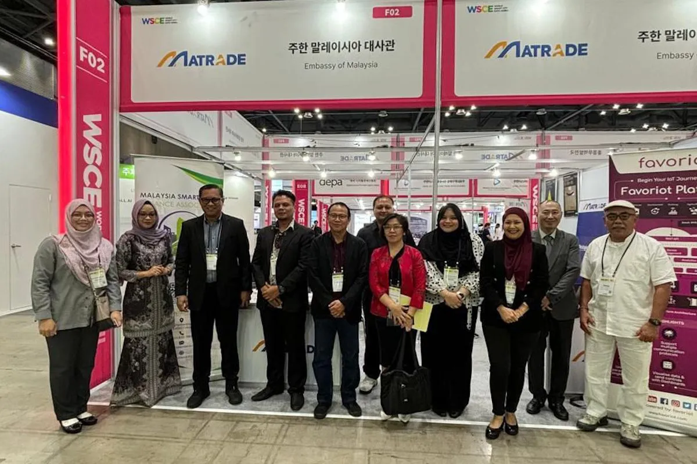
Kemendagri jajaki kerja sama di World Smart City Expo 2024
Kementerian Dalam Negeri(Kemendagri) menjajaki kerja sama saat menghadiri World Smart City Expo (WSCE) 2024 di Korea International Exhibition Center, Korea.
Jumat, 26 Juli 2024 · Sumber: bali.antaranews.com
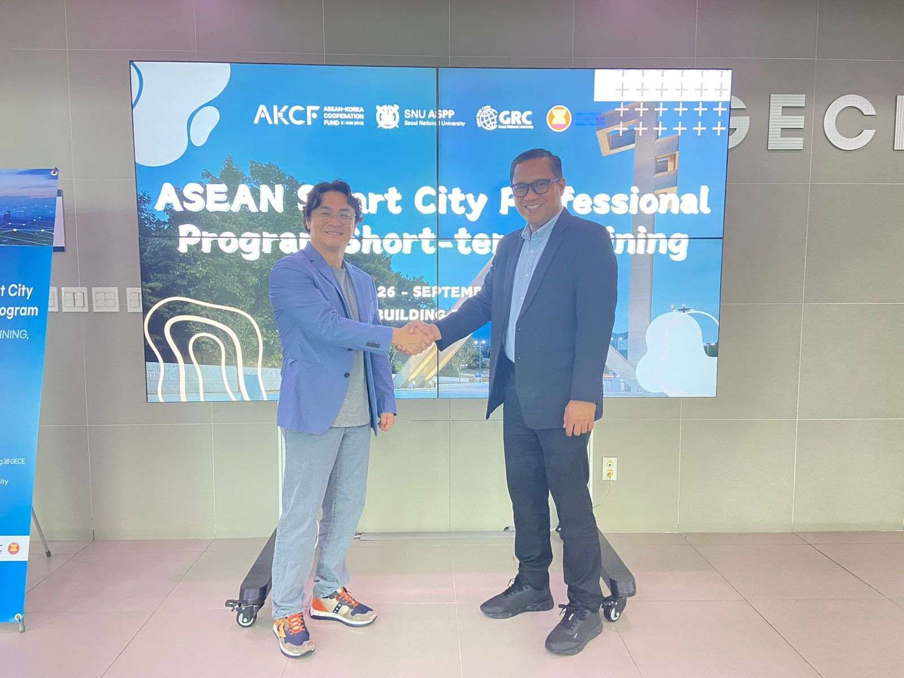
Pemerintah Indonesia Komitmen Dorong Penerapan Kota Cerdas
Pemerintah Indonesia berkomitmen mendorong penerapan kota cerdas dengan berbagai inisiatif dan kerja sama.
Minggu, 08 September 2024 · Sumber: rri.co.id
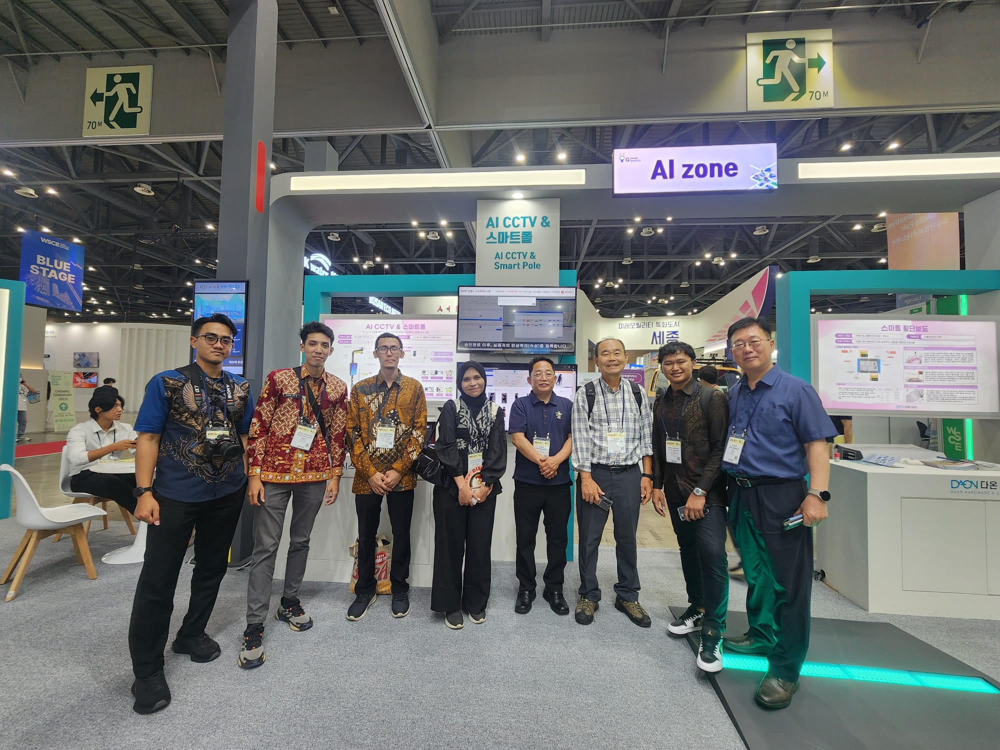
Diskominfo Kota Semarang Kunjungi World Smart City Expo 2024 di Korea Selatan
Diskominfo Kota Semarang mengunjungi World Smart City Expo 2024 di Korea Selatan guna membahas penerapan teknologi cerdas.
Selasa, 03 September 2024 · Sumber: diskominfo.semarangkota.go.id
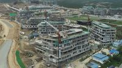
IKN Dibangun Pakai Konsep Smart City, PUPR Akan Jadi Contoh di RI
IKN akan dibangun dengan konsep smart city, menjadi contoh penerapan teknologi kota cerdas di Indonesia.